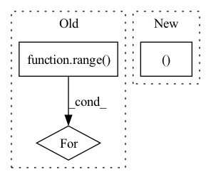

Pattern ID :428
Before Change
// Upscale block
upsampling = []
for _ in range( 2):
upsampling.append(UpsampleBlock(64))
self.upsampling = nn.Sequential(*upsampling)
// Output layer.After Change
)
// Output layer.
self.conv4 = nn.Conv2d(64, 3, (3, 3), (1, 1), (1, 1 ))
// The model should be defined in the Torch.script method.
def _forward_impl(self, x: torch.Tensor) -> torch.Tensor:In pattern: SUPERPATTERN
Frequency: 4
Non-data size: 3
Instances Fragment ID: 1288338
Project Name: lornatang/esrgan-pytorch
Commit Name: 46b948d8f86c7b83fe328e4572704b1755f98e68
Time: 2022-04-18
Author: liuchangyu1111@gmail.com
File Name: model.py
Class Name: Generator
Method Name: __init__
Parent Class: nn.Module
Fragment ID: 1288337
Project Name: tmdt-buw/karolos
Commit Name: bda97ff0aa40ddff62e42733856c4c66cc37b8b6
Time: 2020-05-13
Author: timo.thun@ima-ifu.rwth-aachen.de
File Name: agents/nnfactory/sac.py
Class Name: Critic
Method Name: __init__
Parent Class: nn.Module
Fragment ID: 1288343
Project Name: open-mmlab/openpcdet
Commit Name: 13789796f70a033435a8289b3e1361000fc4694c
Time: 2021-12-26
Author: shaoshuaics@gmail.com
File Name: pcdet/models/backbones_3d/pfe/voxel_set_abstraction.py
Class Name: VoxelSetAbstraction
Method Name: __init__
Parent Class: nn.Module
Fragment ID: 1288333
Project Name: tmdt-buw/karolos
Commit Name: bda97ff0aa40ddff62e42733856c4c66cc37b8b6
Time: 2020-05-13
Author: timo.thun@ima-ifu.rwth-aachen.de
File Name: agents/nnfactory/sac.py
Class Name: Policy
Method Name: __init__
Parent Class: nn.Module